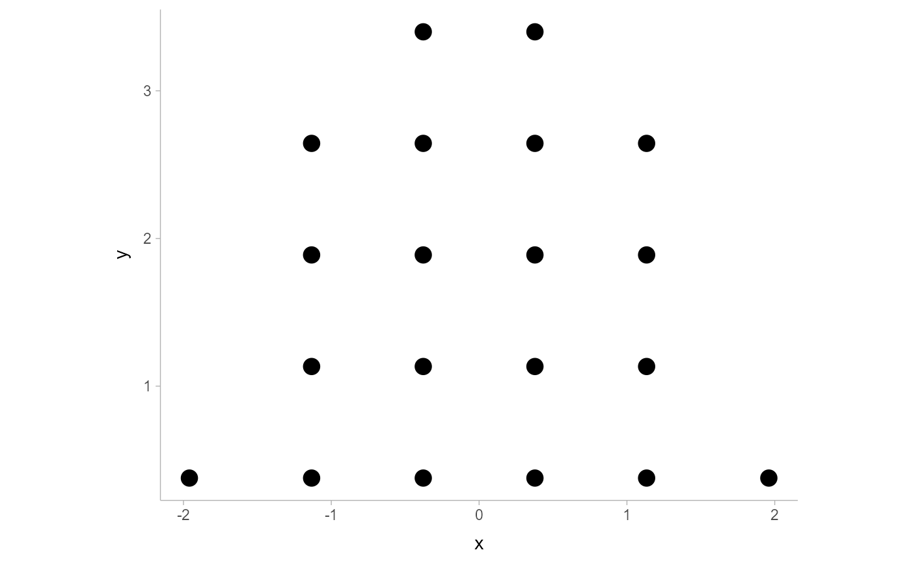

Dynamically select a good bin width for a dotplot
Source:R/binning_methods.R
find_dotplot_binwidth.RdSearches for a nice-looking bin width to use to draw a dotplot such that
the height of the dotplot fits within a given space (maxheight).
Usage
find_dotplot_binwidth(
x,
maxheight,
heightratio = 1,
stackratio = 1,
layout = c("bin", "weave", "hex", "swarm", "bar")
)Arguments
- x
numeric vector of values
- maxheight
maximum height of the dotplot
- heightratio
ratio of bin width to dot height
- stackratio
ratio of dot height to vertical distance between dot centers
- layout
The layout method used for the dots:
"bin"(default): places dots on the off-axis at the midpoint of their bins as in the classic Wilkinson dotplot. This maintains the alignment of rows and columns in the dotplot. This layout is slightly different from the classic Wilkinson algorithm in that: (1) it nudges bins slightly to avoid overlapping bins and (2) if the input data are symmetrical it will return a symmetrical layout."weave": uses the same basic binning approach of"bin", but places dots in the off-axis at their actual positions (unlessoverlaps = "nudge", in which case overlaps may be nudged out of the way). This maintains the alignment of rows but does not align dots within columns."hex": uses the same basic binning approach of"bin", but alternates placing dots+ binwidth/4or- binwidth/4in the off-axis from the bin center. This allows hexagonal packing by setting astackratioless than 1 (something like0.9tends to work)."swarm": uses the"compactswarm"layout frombeeswarm::beeswarm(). Does not maintain alignment of rows or columns, but can be more compact and neat looking, especially for sample data (as opposed to quantile dotplots of theoretical distributions, which may look better with"bin","weave", or"hex")."bar": for discrete distributions, lays out duplicate values in rectangular bars.
Value
A suitable bin width such that a dotplot created with this bin width
and heightratio should have its tallest bin be less than or equal to maxheight.
Details
This dynamic bin selection algorithm uses a binary search over the number of
bins to find a bin width such that if the input data (x) is binned
using a Wilkinson-style dotplot algorithm the height of the tallest bin
will be less than maxheight.
This algorithm is used by geom_dotsinterval() (and its variants) to automatically
select bin widths. Unless you are manually implementing you own dotplot grob
or geom, you probably do not need to use this function directly
See also
bin_dots() for an algorithm can bin dots using bin widths selected
by this function; geom_dotsinterval() for geometries that use
these algorithms to create dotplots.
Examples
library(dplyr)
library(ggplot2)
x = qnorm(ppoints(20))
binwidth = find_dotplot_binwidth(x, maxheight = 4, heightratio = 1)
binwidth
#> [1] 0.755415
bin_df = bin_dots(x = x, y = 0, binwidth = binwidth, heightratio = 1)
bin_df
#> # A tibble: 20 × 3
#> x y bin
#> <dbl> <dbl> <dbl>
#> 1 -1.96 0.378 1
#> 2 -1.13 0.378 2
#> 3 -1.13 1.13 2
#> 4 -1.13 1.89 2
#> 5 -1.13 2.64 2
#> 6 -0.378 0.378 3
#> 7 -0.378 1.13 3
#> 8 -0.378 1.89 3
#> 9 -0.378 2.64 3
#> 10 -0.378 3.40 3
#> 11 0.378 0.378 4
#> 12 0.378 1.13 4
#> 13 0.378 1.89 4
#> 14 0.378 2.64 4
#> 15 0.378 3.40 4
#> 16 1.13 0.378 5
#> 17 1.13 1.13 5
#> 18 1.13 1.89 5
#> 19 1.13 2.64 5
#> 20 1.96 0.378 6
# we can manually plot the binning above, though this is only recommended
# if you are using find_dotplot_binwidth() and bin_dots() to build your own
# grob. For practical use it is much easier to use geom_dots(), which will
# automatically select good bin widths for you (and which uses
# find_dotplot_binwidth() and bin_dots() internally)
bin_df %>%
ggplot(aes(x = x, y = y)) +
geom_point(size = 4) +
coord_fixed()
